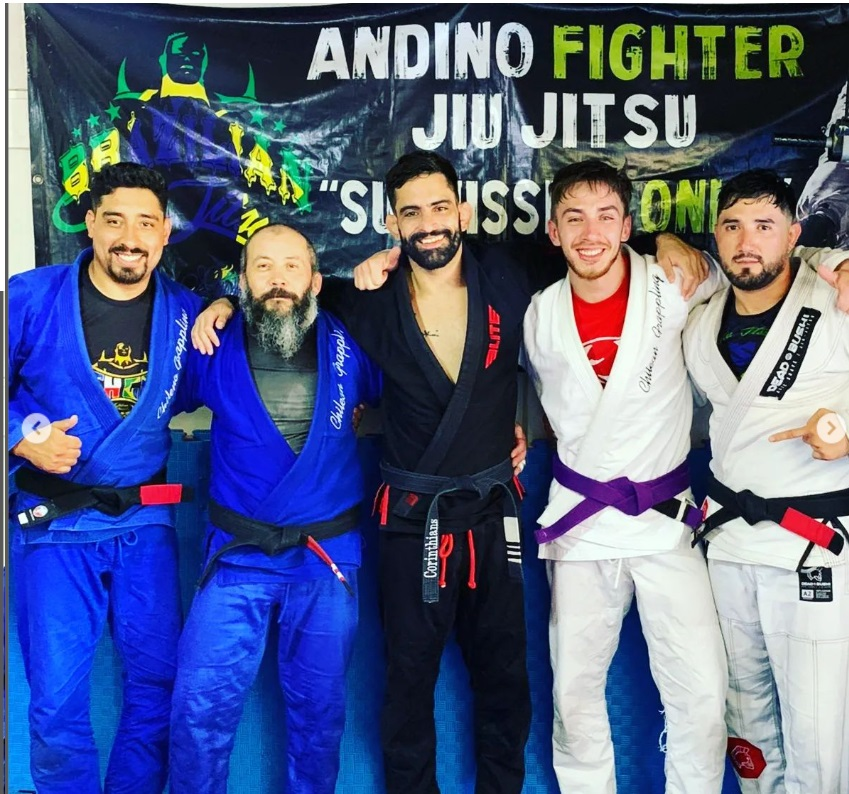
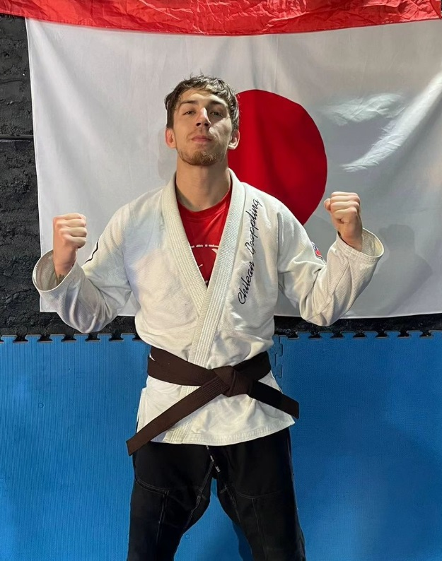
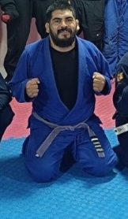

¿QUE ES EL JIU JITSU (BJJ)?
El jiu-jitsu brasileño (o BJJ) es un arte marcial, deporte de combate y sistema de defensa personal desarrollado en Brasil. Se centra principalmente en la lucha cuerpo a cuerpo en el suelo, usando para ello luxaciones, estrangulaciones, inmovilizaciones y derribos. El principal objetivo del jiu-jitsu brasileño es someter al rival mediante una luxación o estrangulación sin necesidad de usar golpes, de ahí que se le denomine a veces «arte suave». Estas técnicas tienen su origen en el judo japonés, particularmente en su apartado de lucha en suelo conocido como ne waza, llevado a Brasil por los maestros Mitsuyo Maeda y Geo Omori. Estas técnicas fueron posteriormente adaptadas en su aspecto deportivo por la familia Gracie, transmitiéndolas a través de sucesivas generaciones. Para promover y demostrar la eficacia de este arte marcial participaron en numerosos eventos deportivos de artes marciales y luchas pactadas durante el siglo XX en Brasil, en ocasiones con reglas mínimas
La Academia

Nuestra visión en Dojo Brasil es ser reconocidos como un centro de excelencia en la enseñanza y práctica del jiu-jitsu, donde cada estudiante, sin importar su nivel inicial, encuentre un camino personalizado hacia el desarrollo físico, mental y espiritual. Nos esforzamos por fomentar un ambiente inclusivo y respetuoso donde los valores del jiu-jitsu, como la disciplina, la perseverancia y el compañerismo, se integren en cada aspecto de nuestra enseñanza.
Nos dedicamos a proporcionar una educación integral en jiu-jitsu, centrada en técnicas efectivas, habilidades de defensa personal y preparación física. Además, aspiramos a cultivar una comunidad vibrante de practicantes comprometidos que no solo mejoren su rendimiento en el tatami, sino que también trasladen los valores aprendidos a sus vidas diarias.
Como parte de nuestra visión, buscamos no solo formar campeones en competiciones, sino también personas que encuentren en el jiu-jitsu una herramienta para el crecimiento personal y la superación de desafíos. Estamos comprometidos con el desarrollo continuo de nuestros alumnos y con contribuir positivamente a la comunidad a través de eventos, programas sociales y actividades benéficas.
En Dojo Brasil, creemos firmemente que el jiu-jitsu es más que un deporte; es una filosofía de vida que promueve el autocontrol, la humildad y el respeto mutuo. Nuestra visión es continuar siendo un referente en la formación integral de individuos que, a través del jiu-jitsu, puedan alcanzar sus metas personales, fortalecer su confianza y mejorar su calidad de vida.
Instructores

GINO DAMBROSIO
Bjj Negro 2° Grado
